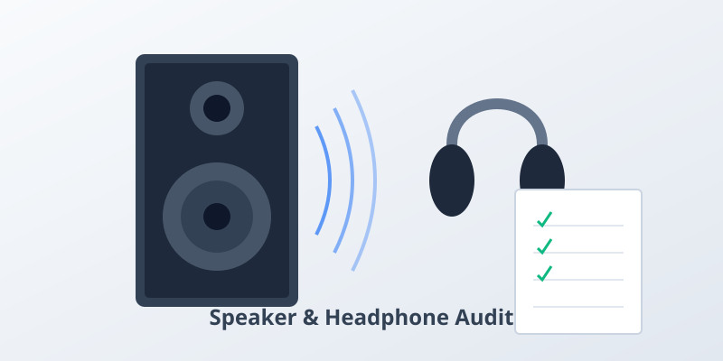

Tableau de bord du sonomètre en temps réel
✅ Statut : Prêt à mesurer
Conseil Pro : Pour une analyse précise, mesurez pendant au moins 30 à 60 secondes pour lisser les bruits soudains.
Note : Estimation de référence. Les microphones varient ; si la valeur de base semble étrange, utilisez « Ajuster la mesure ». Pièce calme ≈ 30–40 dB, conversation ≈ 60 dB, trafic ≈ 80 dB.
Guide des Niveaux Sonores
Note : L'échelle des décibels est logarithmique - chaque augmentation de 10 dB signifie une augmentation de l'intensité d'environ 10 fois.
Comment Utiliser
-
1Autoriser l'Accès au MicrophoneCliquez sur "Commencer la mesure" et accordez la permission à votre microphone.
-
2Surveiller les Niveaux de BruitVisualisez les lectures dB en temps réel. Recommandation : Mesurez pendant environ 1 min pour filtrer les anomalies transitoires.
-
3Arrêter et Générer un RapportCliquez sur "Arrêter la mesure" pour terminer, puis sur "Enregistrer le rapport" pour télécharger un résumé PDF détaillé.
-
4AgirUtilisez les données pour identifier les sources de bruit nocives et protéger votre audition.
Temps d'Exposition Sûr par Niveau de Décibels
Le tableau et le calculateur ci-dessous donnent un repère rapide pour relier niveau (dB) et durée, et comparer des mesures de façon reproductible. C’est une aide à la décision, pas une mesure de conformité. Référence : NIOSH/CDC.
Calculateur d’exposition rapide
Estime une durée maximale d’exposition quotidienne avec 85 dB = 8 h et le taux d’échange de 3 dB (repère, pas une mesure de conformité).
- Utilisez la moyenne (pas un pic bref) pour décider.
- Gardez distance et configuration constantes pour comparer.
- Pour la conformité, utilisez un équipement certifié et une procédure documentée.
Sûr pour une exposition toute la journée
Limite d'exposition de 8 heures recommandée par le NIOSH
Niveau sonore d'une tondeuse, d'une moto
Sèche-cheveux, outils électriques
Concert de rock, sirène
Pétards, moteur d'avion - éviter l'exposition
⚠️ Important : Pour chaque augmentation de 3 dB au-dessus de 85 dB, le temps d'exposition sûr est réduit de moitié. En savoir plus sur NIDCD.
Matériel recommandé (facultatif)
Pour des mesures plus reproductibles ou des comparaisons sur la durée, un sonomètre dédié peut aider.
Sonomètre numérique (décibelmètre)
Best-sellerOption pratique pour la maison/le bureau, les comparaisons A/B cohérentes et les discussions de voisinage basées sur des mesures.
- Utile si vous voulez une lecture plus stable qu’un sonomètre web.
- Mesurez avec une distance fixe et la même routine (temps de mesure, emplacement).
- Pour la conformité réglementaire, utilisez un équipement certifié et une procédure documentée.
Divulgation : en tant que Partenaire Amazon, nous réalisons un bénéfice sur les achats remplissant les conditions requises.
Comprendre les Décibels et la Mesure du Son
Un sonomètre (décibelmètre) mesure le niveau de pression acoustique (SPL) en décibels (dB). Notre outil en ligne utilise le microphone de votre appareil pour détecter le bruit ambiant et fournir des mesures en temps réel.
Pourquoi les décibels comptent : L'échelle des décibels est logarithmique - chaque augmentation de 10 dB représente environ 10 fois plus d'intensité sonore et semble environ deux fois plus forte. Cela signifie que 80 dB n'est pas juste un peu plus fort que 70 dB ; c'est significativement plus intense.
🏥 Recommandation de l'OMS : L'Organisation Mondiale de la Santé recommande de maintenir les niveaux de bruit en dessous de 70 dB pendant des périodes prolongées pour prévenir la perte auditive. Les sons supérieurs à 85 dB peuvent causer des dommages auditifs en cas d'exposition prolongée.
Comment le bruit endommage l'audition : Les sons forts peuvent endommager les cellules ciliées délicates de votre oreille interne. Ces cellules ne se régénèrent pas, donc les dommages sont permanents. Le bruit de haute intensité ou de longue durée provoque :
- Dommages mécaniques aux cellules ciliées de l'oreille interne
- Surstimulation des nerfs auditifs
- Perte Auditive Induite par le Bruit (PAIB)
- Acouphènes (bourdonnements dans les oreilles) et problèmes de sensibilité
Référence : autorités sanitaires.
Confidentialité et Sécurité des Données
Votre vie privée est notre priorité. Tout le traitement audio se fait localement dans votre navigateur. Aucune donnée audio n'est jamais enregistrée, stockée ou téléchargée sur nos serveurs. La fonction "Enregistrer le rapport" génère le fichier PDF directement sur votre appareil en utilisant les statistiques récapitulatives (min, max, moy) de votre session actuelle.
Ce qui nous différencie des autres sonomètres en ligne
Pensé pour des comparaisons reproductibles et une documentation claire, pas seulement un chiffre en direct.
- Rapport généré en local : « Enregistrer le rapport » crée le fichier sur votre appareil, sans téléverser l’audio brut.
- Plus de contexte : spectre de fréquences + historique pour comprendre tendances et pics.
- Mesures reproductibles : conseils type SOP, exemples de rapports et modèle de journal pour des comparaisons cohérentes.
- Transparence : Methodology, Accuracy et Changelog expliquent le fonctionnement et les changements.
- Vie privée : voir Privacy (flux de données et services tiers).
Exemples de rapports (interpréter les résultats)
Aperçus statiques issus du même modèle « Enregistrer le rapport » pour illustrer min/moy/max et une routine de mesure reproductible.
Chambre (nuit) – immeuble en ville
Faible
Interprétation : en immeuble, le max reflète souvent un événement court (porte, pas dans le couloir). Pour le sommeil, la moyenne sur un créneau comparable est généralement plus utile.
- Gardez la même heure (ex. 23h–0h).
- Notez volets/fenêtres et VMC/ventilation.
- Répétez 3× et comparez surtout les moyennes.
Aspirateur (mode éco vs turbo) – 1 m
Élevé
Interprétation : utile pour comparer un nouvel appareil, une brosse, ou un mode (éco/turbo). Le protocole de mesure compte plus que la valeur absolue.
- Notez le sol (carrelage vs tapis).
- Indiquez le mode/puissance.
- Marquez la position et comparez la moyenne.
Boulevard / périphérique (fenêtre entrouverte)
Bruyant
Interprétation : le bruit de rue varie (bus, scooters, livraisons). Pour comparer, mesurez au même endroit et à la même heure (créneau de 60 s).
- Heures de pointe vs nuit, séparément.
- Notez la position des fenêtres (fermée/entrebâillée).
- Moyenne pour l’exposition, max pour les événements.
Modèle de journal de mesure (copier/coller)
Pour rendre vos comparaisons plus reproductibles entre jours et appareils.
date,time,location,distance,device,avg_db,max_db,notes 2026-03-23,21:30,bedroom,1m,phone,34,48,window closed; HVAC off 2026-03-24,21:30,bedroom,1m,phone,36,52,window closed; light rain 2026-03-25,21:30,bedroom,1m,phone,33,46,window closed; quiet night
Impact Sanitaire de la Pollution Sonore
Le bruit ne concerne pas seulement l’audition : une exposition chronique peut influencer le sommeil, le stress et la santé globale. Référence : OMS Europe.
Perte Auditive (PAIB)
L'exposition à des sons ≥85 dB pendant plus de 8 heures peut causer des dommages auditifs permanents.
Directives CDC/NIOSH →Stress et Anxiété
Le bruit chronique augmente les hormones de stress et le risque de troubles anxieux.
Recherche OMS →Perturbation du Sommeil
Le bruit nocturne au-dessus de 40 dB peut perturber significativement la qualité et la durée du sommeil.
Directives Sommeil →Risque Cardiovasculaire
Une exposition à long terme à un bruit élevé peut augmenter le risque de maladies cardiaques et d'hypertension.
Études OMS →Impact Cognitif
La pollution sonore peut altérer la concentration, la mémoire et les capacités d'apprentissage.
Ressources HHF →Développement de l'Enfant
Les enfants sont plus vulnérables aux problèmes d'apprentissage et de comportement liés au bruit.
Conclusions OMS →🛡️ Conseils pratiques de protection
- Maintenez l'exposition quotidienne au bruit en dessous de 70 dB si possible
- Portez une protection auditive (bouchons/casque) dans les environnements ≥85 dB
- Limitez le temps d'exposition aux bruits de haute intensité
- Utilisez des outils de surveillance du bruit pour suivre et gérer les niveaux sonores
- Accordez des périodes de repos à vos oreilles après une exposition à un bruit fort
Référence : NIOSH/CDC.
Utilisations Pratiques de Votre Sonomètre en Ligne
Ce sonomètre en ligne gratuit transforme votre navigateur en un outil de mesure du bruit fonctionnel. Bien qu'il ne remplace pas un décibelmètre professionnel de classe 1 calibré, il sert d'excellente référence pour les situations de la vie quotidienne où comprendre les niveaux de bruit peut améliorer votre santé et votre productivité.
🏠 Maison et Vie
- Test d'Appareils : Vérifiez si votre nouveau lave-vaisselle ou aspirateur est aussi silencieux qu'annoncé.
- Bruit des Voisins : Mesurez objectivement le bruit des travaux ou de la musique de votre voisin depuis votre salon.
- Environnement de Sommeil : Assurez-vous que votre chambre reste en dessous des 30-40 dB recommandés pour une qualité de sommeil optimale.
💼 Travail et Études
- Distractions au Bureau : Identifiez les heures de pointe de bruit dans votre bureau open space pour mieux planifier votre travail concentré.
- Zones d'Étude : Trouvez le coin le plus calme dans une bibliothèque ou un café. Le bruit idéal pour étudier est souvent autour de 40-50 dB.
- Travail à Distance : Testez votre niveau de bruit de fond avant de rejoindre une visioconférence importante.
- Documentation : Utilisez la fonction "Enregistrer le rapport" pour créer un enregistrement PDF des niveaux de bruit pour la conformité au travail ou la résolution de conflits.
🎧 Audio et Divertissement
- Écoute Sûre : Calibrez le volume de votre système de haut-parleurs pour rester dans une plage sûre de 70-80 dB pour les films.
- Surveillance d'Événements : Vérifiez si le concert ou le club où vous êtes dépasse les niveaux dangereux de 100 dB.
- Configuration de Jeu : Mesurez le bruit du ventilateur de l'ordinateur sous charge pour optimiser votre PC silencieux.
🩺 Santé et Bien-être
- Gestion des Acouphènes : Aidez à identifier les environnements qui pourraient déclencher des bourdonnements d'oreilles.
- Sécurité de Bébé : Assurez-vous que l'environnement de la chambre est apaisant et que les machines à bruit blanc ne sont pas trop fortes.
- Réduction du Stress : Corrélez vos niveaux de stress avec le bruit ambiant pour mieux gérer vos apports sensoriels.
Exemples locaux (France) : quand mesurer est utile
Pour comparer correctement, gardez une distance constante et répétez le même scénario. Les exemples ci-dessous sont fréquents et faciles à suivre dans le temps.
Situations typiques
- Immeuble : travaux, portes qui claquent, ascenseur, bruit de voisinage.
- Ville : circulation, deux-roues, sirènes ; comparer fenêtre ouverte vs. fermée.
- Sommeil : mesurer le niveau de base dans la chambre sur plusieurs soirs (ventilation, rue).
Routine de preuve et de suivi
- Notez lieu, heure, distance (ex. 1 m) et configuration (fenêtres/portes).
- Mesurez 30–60 s, répétez 3 fois, comparez surtout les moyennes.
- Générez un PDF via « Enregistrer le rapport » et ajoutez le contexte (pièce, étage, orientation).
Repères locaux & ressources (France)
- Les règles varient selon les communes et les situations (copropriété, voisinage, travaux). Un historique de mesures (dates/heures) aide davantage qu’une mesure isolée.
- Démarches et informations pratiques : Service-Public.fr (nuisances sonores)
- Cartes et données (Île-de-France) : Bruitparif
Comment Ça Marche : Analyse Audio Basée sur le Navigateur
Contrairement aux sonomètres traditionnels qui utilisent des capteurs matériels spécialisés, cet outil exploite la norme Web Audio API intégrée aux navigateurs web modernes (Chrome, Edge, Safari, Firefox). Voici une explication simplifiée du processus :
- Capture du Signal : Le navigateur demande l'accès au microphone de votre appareil (flux d'entrée).
- Échantillonnage Numérique : Les ondes sonores analogiques brutes sont converties en paquets de données numériques (échantillons) des milliers de fois par seconde.
- Analyse de Fréquence : Nous utilisons un algorithme appelé Transformée de Fourier Rapide (FFT) pour analyser l'intensité des différentes fréquences sonores.
- Calcul RMS : L'amplitude Root Mean Square (RMS) est calculée pour déterminer la puissance moyenne du signal audio.
- Mappage en Décibels : Cette valeur numérique brute est mappée sur une échelle de décibels (dB) à l'aide d'un algorithme de calibration conçu pour approximer l'acoustique standard d'une pièce.
Note sur la Calibration : Parce que chaque microphone (smartphone, ordinateur portable, webcam) a une sensibilité matérielle différente, un compteur basé sur le web ne peut jamais être précis à 100% sans calibration matérielle externe. Nous utilisons une courbe "meilleur ajustement" qui s'aligne avec les microphones courants des appareils grand public pour fournir les mesures relatives les plus utiles possibles.
Foire Aux Questions
Ce sonomètre est-il précis ?
Bien que ce sonomètre en ligne fournisse de bonnes estimations, il peut ne pas correspondre aux appareils de qualité professionnelle. La précision dépend de la qualité du microphone de votre appareil et de la calibration. Pour des mesures précises, envisagez un équipement professionnel de fournisseurs certifiés.
Comparer les niveaux de décibels →Pourquoi dois-je autoriser l'accès au microphone ?
Le sonomètre nécessite un accès au microphone pour mesurer les niveaux de bruit ambiant. Votre audio est traité localement dans votre navigateur et n'est jamais enregistré, stocké ou transmis à un serveur. Votre vie privée est protégée.
Quel est un niveau de bruit sûr ?
Repère pratique : visez des niveaux durables sous 70 dB quand c’est possible. À l’approche de 85 dB, la durée d’exposition devient déterminante (le temps “sûr” chute rapidement quand le niveau augmente).
Directives NIOSH →Puis-je utiliser ceci sur des appareils mobiles ?
Oui ! Ce sonomètre fonctionne aussi bien sur les ordinateurs de bureau que sur les appareils mobiles (iOS Safari, Chrome Mobile, etc.). Autorisez simplement l'accès au microphone lorsque vous y êtes invité pour commencer la mesure. Notez que la qualité du microphone varie selon les appareils.
Comment le bruit endommage-t-il l'audition ?
Les sons forts endommagent les minuscules cellules ciliées de la cochlée de votre oreille interne. Ces cellules convertissent les vibrations sonores en signaux électriques pour votre cerveau. Une fois endommagées, elles ne se régénèrent pas, entraînant une perte auditive permanente. Une haute intensité ou une exposition prolongée accélère ces dommages. Si vous êtes inquiet pour votre santé auditive, pensez à passer notre test auditif en ligne gratuit.
En savoir plus sur NIDCD →Qu'est-ce que le "taux d'échange de 3 dB" ?
Le taux d'échange de 3 dB du NIOSH signifie que pour chaque augmentation de 3 dB du niveau sonore, le temps d'exposition sûr est réduit de moitié. Par exemple : 85 dB = 8 heures, 88 dB = 4 heures, 91 dB = 2 heures, et ainsi de suite. Cette relation exponentielle montre pourquoi de petites augmentations de dB comptent de manière significative.
📚 Sources Faisant Autorité et Références
Toutes les informations sur cette page sont basées sur des directives et des recherches d'organisations de santé et de sécurité internationalement reconnues :
🏛️ NIOSH/CDC
Institut National pour la Sécurité et la Santé au Travail - Prévention du Bruit et de la Perte Auditive
🌍 Organisation Mondiale de la Santé (OMS)
Directives d'Écoute Sûre et Prévention de la Perte Auditive
🔬 NIDCD (NIH)
Institut National sur la Surdité et Autres Troubles de la Communication
👂 Fondation pour la Santé Auditive
Tableau d'Exposition aux Décibels et Éducation à l'Écoute Sûre
🇪🇺 OMS Europe
Recherche sur le Bruit Environnemental et les Effets sur la Santé
📰 Forbes Health
Guide des Niveaux de Décibels et de la Santé Auditive
Dernière mise à jour : Janvier 2026. Nous révisons continuellement notre contenu par rapport aux dernières directives scientifiques pour garantir l'exactitude.
📝 Derniers Articles

Conflits de Bruit de Voisinage : Comment Recueillir des Preuves Valables
Apprenez à utiliser un sonomètre pour recueillir des preuves objectives.
Comment Tester Votre Audition à la Maison : Un Guide Complet
Effectuez un auto-contrôle fiable de l'audition et interprétez les résultats.

Le Guide Ultime pour Tester de Nouveaux Haut-Parleurs et Écouteurs
Audit technique en 6 étapes pour les défauts et la réponse en fréquence.